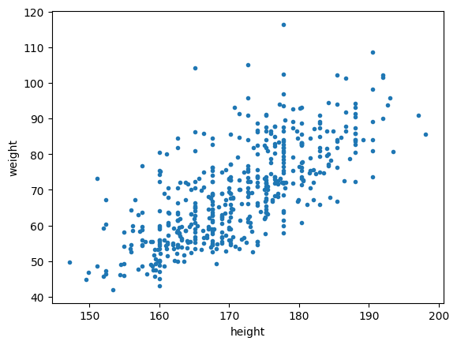
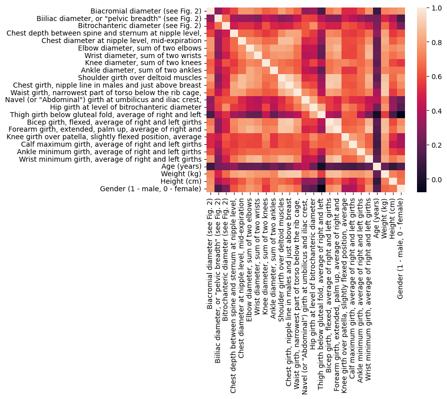
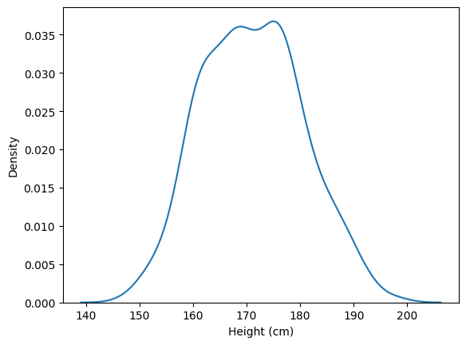
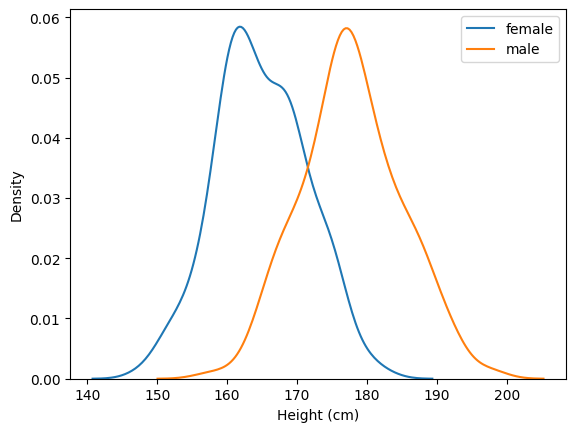
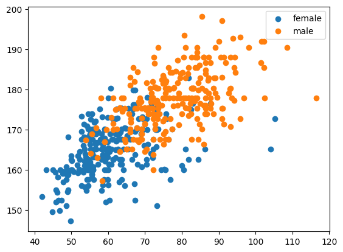
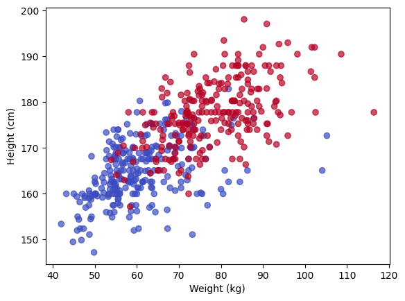
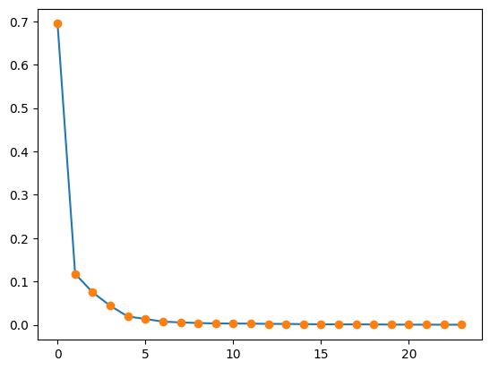
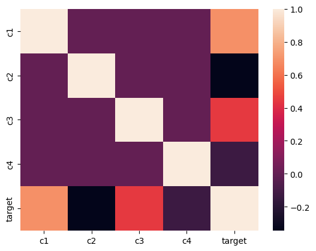

import numpy as np
import pandas as pd
import matplotlib.pyplot as plt
import seaborn as sns
from sklearn.decomposition import PCA07-08: EDA e PCA
Pandas df exploration
df = pd.read_excel("body.xlsx", index_col=0)df.info()<class 'pandas.core.frame.DataFrame'>
Index: 507 entries, 1 to 507
Data columns (total 25 columns):
# Column Non-Null Count Dtype
--- ------ -------------- -----
0 Biacromial diameter (see Fig. 2) 507 non-null float64
1 Biiliac diameter, or "pelvic breadth" (see Fig. 2) 507 non-null float64
2 Bitrochanteric diameter (see Fig. 2) 507 non-null float64
3 Chest depth between spine and sternum at nipple level, 507 non-null float64
4 Chest diameter at nipple level, mid-expiration 507 non-null float64
5 Elbow diameter, sum of two elbows 507 non-null float64
6 Wrist diameter, sum of two wrists 507 non-null float64
7 Knee diameter, sum of two knees 507 non-null float64
8 Ankle diameter, sum of two ankles 507 non-null float64
9 Shoulder girth over deltoid muscles 507 non-null float64
10 Chest girth, nipple line in males and just above breast 507 non-null float64
11 Waist girth, narrowest part of torso below the rib cage, 507 non-null float64
12 Navel (or "Abdominal") girth at umbilicus and iliac crest, 507 non-null float64
13 Hip girth at level of bitrochanteric diameter 507 non-null float64
14 Thigh girth below gluteal fold, average of right and left 507 non-null float64
15 Bicep girth, flexed, average of right and left girths 507 non-null float64
16 Forearm girth, extended, palm up, average of right and 507 non-null float64
17 Knee girth over patella, slightly flexed position, average 507 non-null float64
18 Calf maximum girth, average of right and left girths 507 non-null float64
19 Ankle minimum girth, average of right and left girths 507 non-null float64
20 Wrist minimum girth, average of right and left girths 507 non-null float64
21 Age (years) 507 non-null int64
22 Weight (kg) 507 non-null float64
23 Height (cm) 507 non-null float64
24 Gender (1 - male, 0 - female) 507 non-null int64
dtypes: float64(23), int64(2)
memory usage: 103.0 KBheight = df["Height (cm)"].values
gender = df["Gender (1 - male, 0 - female)"].values
weight = df["Weight (kg)"].values#plt.plot(height, weight, "o")
plt.scatter(height, weight, marker=".")
plt.xlabel("height")
plt.ylabel("weight")
plt.show()
Statistiche principali
mean = df.mean()
corr = df.corr()
cov = df.cov()
std = df.std()sns.heatmap(corr)
plt.show()
female = df[df["Gender (1 - male, 0 - female)"] == 0]
male = df[df["Gender (1 - male, 0 - female)"] == 1]
f_weight = female["Weight (kg)"]
f_height = female["Height (cm)"]
m_weight = male["Weight (kg)"]
m_height = male["Height (cm)"]KDE Plot
sns.kdeplot(df["Height (cm)"])
plt.show()
sns.kdeplot(f_height, label="female")
sns.kdeplot(m_height, label="male")
plt.legend()
plt.show()
Scatter Plot
plt.scatter(f_weight, f_height, label="female")
plt.scatter(male["Weight (kg)"], male["Height (cm)"], label="male")
plt.legend()
plt.show()
Alternativa
# concateni i dati
weights = np.concatenate([female["Weight (kg)"], male["Weight (kg)"]])
heights = np.concatenate([female["Height (cm)"], male["Height (cm)"]])
# etichette di classe
y = np.concatenate([
np.zeros(len(female)), # female = 0
np.ones(len(male)) # male = 1
])
plt.scatter(weights, heights, c=y, cmap="coolwarm", alpha=0.7)
plt.xlabel("Weight (kg)")
plt.ylabel("Height (cm)")
plt.show()
Covarianza e Correlazione Lineare
np.round(np.cov(height, weight), 2) array([[ 88.5 , 90.05],
[ 90.05, 178.11]])np.round(np.corrcoef(height, weight), 2)array([[1. , 0.72],
[0.72, 1. ]])Standard Scaling
centered = df - df.mean()
print(centered.shape)
centered = centered.drop(["Gender (1 - male, 0 - female)"], axis=1)
print(centered.shape)(507, 25)
(507, 24)scaled = centered / df.std(ddof=1)round(scaled.mean(),2)Age (years) 0.0
Ankle diameter, sum of two ankles -0.0
Ankle minimum girth, average of right and left girths 0.0
Biacromial diameter (see Fig. 2) -0.0
Bicep girth, flexed, average of right and left girths -0.0
Biiliac diameter, or "pelvic breadth" (see Fig. 2) -0.0
Bitrochanteric diameter (see Fig. 2) 0.0
Calf maximum girth, average of right and left girths 0.0
Chest depth between spine and sternum at nipple level, 0.0
Chest diameter at nipple level, mid-expiration 0.0
Chest girth, nipple line in males and just above breast -0.0
Elbow diameter, sum of two elbows 0.0
Forearm girth, extended, palm up, average of right and -0.0
Gender (1 - male, 0 - female) NaN
Height (cm) -0.0
Hip girth at level of bitrochanteric diameter 0.0
Knee diameter, sum of two knees 0.0
Knee girth over patella, slightly flexed position, average -0.0
Navel (or "Abdominal") girth at umbilicus and iliac crest, -0.0
Shoulder girth over deltoid muscles 0.0
Thigh girth below gluteal fold, average of right and left -0.0
Waist girth, narrowest part of torso below the rib cage, -0.0
Weight (kg) -0.0
Wrist diameter, sum of two wrists -0.0
Wrist minimum girth, average of right and left girths 0.0
dtype: float64round(scaled.std(),2)Age (years) 1.0
Ankle diameter, sum of two ankles 1.0
Ankle minimum girth, average of right and left girths 1.0
Biacromial diameter (see Fig. 2) 1.0
Bicep girth, flexed, average of right and left girths 1.0
Biiliac diameter, or "pelvic breadth" (see Fig. 2) 1.0
Bitrochanteric diameter (see Fig. 2) 1.0
Calf maximum girth, average of right and left girths 1.0
Chest depth between spine and sternum at nipple level, 1.0
Chest diameter at nipple level, mid-expiration 1.0
Chest girth, nipple line in males and just above breast 1.0
Elbow diameter, sum of two elbows 1.0
Forearm girth, extended, palm up, average of right and 1.0
Gender (1 - male, 0 - female) NaN
Height (cm) 1.0
Hip girth at level of bitrochanteric diameter 1.0
Knee diameter, sum of two knees 1.0
Knee girth over patella, slightly flexed position, average 1.0
Navel (or "Abdominal") girth at umbilicus and iliac crest, 1.0
Shoulder girth over deltoid muscles 1.0
Thigh girth below gluteal fold, average of right and left 1.0
Waist girth, narrowest part of torso below the rib cage, 1.0
Weight (kg) 1.0
Wrist diameter, sum of two wrists 1.0
Wrist minimum girth, average of right and left girths 1.0
dtype: float64PCA
pca = PCA()
#centered = pca.fit_transform(centered)
pca.fit(centered)
plt.plot(pca.explained_variance_ratio_, '-')
plt.plot(pca.explained_variance_ratio_, 'o')
plt.show()
summ = 0
thr = 0.9
k = 0
for var in pca.explained_variance_ratio_:
if summ <= thr:
k += 1
summ += var
else:
break
print(k)4pca = PCA(n_components=k)
p_array = pca.fit_transform(centered)
p_df = pd.DataFrame(p_array)
p_df.columns = ["c1", "c2", "c3", "c4"]
p_df["target"] = gendersns.heatmap(p_df.corr())
plt.show()
from sklearn.model_selection import train_test_split
from sklearn.metrics import accuracy_score
from sklearn.linear_model import LinearRegression
x_train, x_test, y_train, y_test = train_test_split(p_array, gender, test_size=0.2)
print(x_train.shape)
print(x_test.shape)
print(y_train.shape)
print(y_test.shape)
regr = LinearRegression()
regr.fit(x_train, y_train)
predictions = regr.predict(x_test)
predictions = (predictions >= 0.5).astype(int)
acc = accuracy_score(predictions, y_test)
print(round(acc,2))(405, 4)
(102, 4)
(405,)
(102,)
0.97Factor Loadings
loadings = pca.components_.T
l_df = pd.DataFrame(loadings, index=centered.columns, columns= ["c1", "c2", "c3", "c4"])l_df| c1 | c2 | c3 | c4 | |
|---|---|---|---|---|
| Biacromial diameter (see Fig. 2) | 0.088647 | -0.106290 | 0.096804 | 0.026067 |
| Biiliac diameter, or "pelvic breadth" (see Fig. 2) | 0.042160 | 0.047046 | -0.051891 | 0.141353 |
| Bitrochanteric diameter (see Fig. 2) | 0.052266 | 0.030594 | -0.047169 | 0.109800 |
| Chest depth between spine and sternum at nipple level, | 0.081933 | 0.010757 | 0.022322 | -0.023044 |
| Chest diameter at nipple level, mid-expiration | 0.092392 | -0.044954 | 0.042627 | -0.060098 |
| Elbow diameter, sum of two elbows | 0.043226 | -0.030326 | 0.037368 | 0.009872 |
| Wrist diameter, sum of two wrists | 0.028752 | -0.018737 | 0.025919 | 0.001314 |
| Knee diameter, sum of two knees | 0.039211 | -0.014619 | -0.002909 | 0.027345 |
| Ankle diameter, sum of two ankles | 0.036049 | -0.017290 | 0.032360 | 0.026081 |
| Shoulder girth over deltoid muscles | 0.372689 | -0.226972 | 0.190561 | -0.341242 |
| Chest girth, nipple line in males and just above breast | 0.371584 | -0.093149 | 0.128207 | -0.362374 |
| Waist girth, narrowest part of torso below the rib cage, | 0.409625 | 0.138307 | 0.014333 | -0.211150 |
| Navel (or "Abdominal") girth at umbilicus and iliac crest, | 0.281018 | 0.431562 | -0.364365 | 0.159809 |
| Hip girth at level of bitrochanteric diameter | 0.197000 | 0.178900 | -0.400822 | 0.165068 |
| Thigh girth below gluteal fold, average of right and left | 0.088108 | 0.069092 | -0.371231 | 0.055705 |
| Bicep girth, flexed, average of right and left girths | 0.148497 | -0.062530 | 0.027850 | -0.141787 |
| Forearm girth, extended, palm up, average of right and | 0.097703 | -0.064307 | 0.037546 | -0.064731 |
| Knee girth over patella, slightly flexed position, average | 0.077776 | -0.004790 | -0.084661 | 0.076924 |
| Calf maximum girth, average of right and left girths | 0.081002 | -0.013709 | -0.083551 | 0.029954 |
| Ankle minimum girth, average of right and left girths | 0.054795 | -0.018874 | -0.014001 | 0.026119 |
| Wrist minimum girth, average of right and left girths | 0.044978 | -0.030127 | 0.033409 | -0.009197 |
| Age (years) | 0.117430 | 0.719571 | 0.600513 | 0.120955 |
| Weight (kg) | 0.516284 | -0.108589 | -0.136999 | 0.133517 |
| Height (cm) | 0.258789 | -0.374423 | 0.314729 | 0.740977 |
c1 = l_df["c1"]
b_c1 = c1 >= c1.mean()
b_c1Biacromial diameter (see Fig. 2) False
Biiliac diameter, or "pelvic breadth" (see Fig. 2) False
Bitrochanteric diameter (see Fig. 2) False
Chest depth between spine and sternum at nipple level, False
Chest diameter at nipple level, mid-expiration False
Elbow diameter, sum of two elbows False
Wrist diameter, sum of two wrists False
Knee diameter, sum of two knees False
Ankle diameter, sum of two ankles False
Shoulder girth over deltoid muscles True
Chest girth, nipple line in males and just above breast True
Waist girth, narrowest part of torso below the rib cage, True
Navel (or "Abdominal") girth at umbilicus and iliac crest, True
Hip girth at level of bitrochanteric diameter True
Thigh girth below gluteal fold, average of right and left False
Bicep girth, flexed, average of right and left girths False
Forearm girth, extended, palm up, average of right and False
Knee girth over patella, slightly flexed position, average False
Calf maximum girth, average of right and left girths False
Ankle minimum girth, average of right and left girths False
Wrist minimum girth, average of right and left girths False
Age (years) False
Weight (kg) True
Height (cm) True
Name: c1, dtype: bool